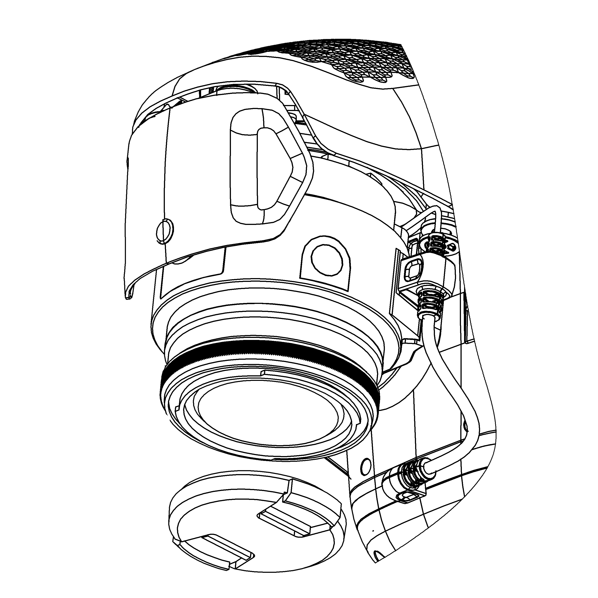

Запуск¶
Чтобы запустить Геоскан Gemini, последовательно выполните пункты инструкции:
- Зарядите АКБ (см. Зарядная станция и АКБ).
- Спланируйте полетное задание, используя Geoscan Planner (см. Использование Geoscan Planner). Сохраните полетное задание, чтобы быстро загрузить его перед вылетом.
- Установите воздушные винты на оси моторов БВС. Обратите внимание, что винты отличаются по направлению вращения. Используйте цветовую маркировку осях моторов и винтов, они должны совпадать.

Установка воздушных винтов
- Отформатируйте SD карту памяти и установите ее в слот в задней части БВС. Убедитесь что карта надежно зафиксирована в слоте и извлекается только при повторном нажатии.

Установка карты памяти
- Установите АКБ в отсек БВС. Активируйте подачу питания. Для этого нажмите кнопку управления на АКБ один раз, отпустите и сразу же снова зажмите и удерживайте её 4-5 секунд.

Установка АКБ в отсек БВС
- Перед началом полета снимите крышку объектива.

{kind=link}
Не забудьте снять крышку с объектива камеры
- Установите БВС на взлётную площадку и убедитесь, что воздушные винты свободно вращаются.
- Откройте полетное задание в Geoscan Planner. Запустите мастер предстартовой подготовки. Убедитесь в успешном прохождении предстартовой подготовки.
- Нажмите на кнопку Старт в окне Geoscan Planner.
БВС осуществит взлет и начнет выполнение полетного задания.
Порядок разборки БВС¶
- Деактивируйте АКБ так же как при включении (одно короткое и одно длинное нажатие кнопки управления). Извлеките АКБ из отсека БВС.
- Снимите воздушные винты и уложите их в транспортировочный кейс.
- Извлеките SD карту памяти из слота БВС.